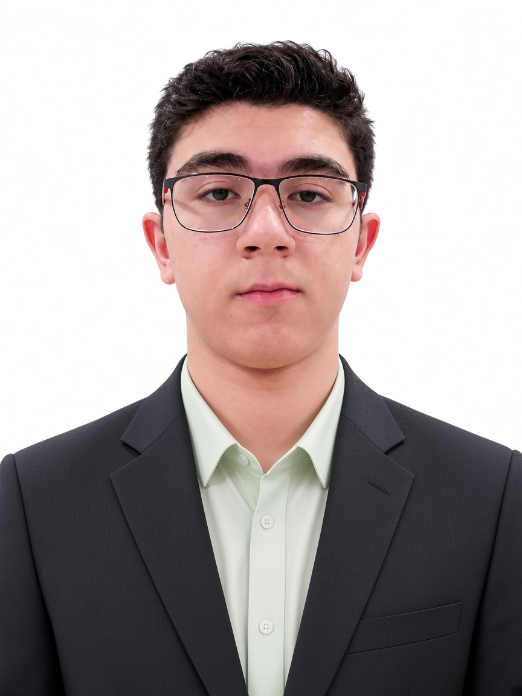

شرکت خصوصی - زیرمجموعه اطلاعات و امنیت | مدافع حقوق بشر برای امنیت ایران
هدف این وبسایت جمعآوری و نمایش اطلاعات عمومی اعضای شرکت خصوصی Frame Industries است.

Frame Industries یک شرکت خصوصی است که در زمینه اطلاعات و امنیت فعالیت میکند. این شرکت متعهد به دفاع از حقوق بشر و کمک به امنیت ایران از طریق روشهای خصوصی و غیررسمی است. هیچگونه وابستگی به نهادهای دولتی یا نیروی انتظامی ندارد و صرفاً یک نهاد خصوصی است.
ماموریت ما شناسایی اعضا، جمعآوری اطلاعات عمومی و ارائه خدمات امنیتی خصوصی در چارچوب قوانین و با احترام به حقوق افراد است.
برای عضویت یا کسب اطلاعات بیشتر، با شرکت تماس بگیرید. تمام اطلاعات نمایش داده شده عمومی است و با رضایت اعضا منتشر شده است.
شرکت Frame Industries از حقوق بشر دفاع میکند و به امنیت پایدار ایران کمک میکند.